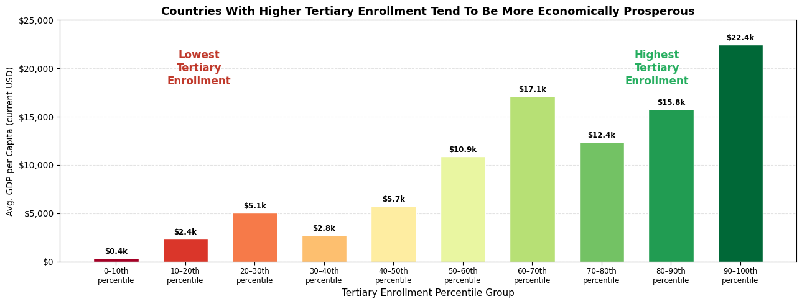
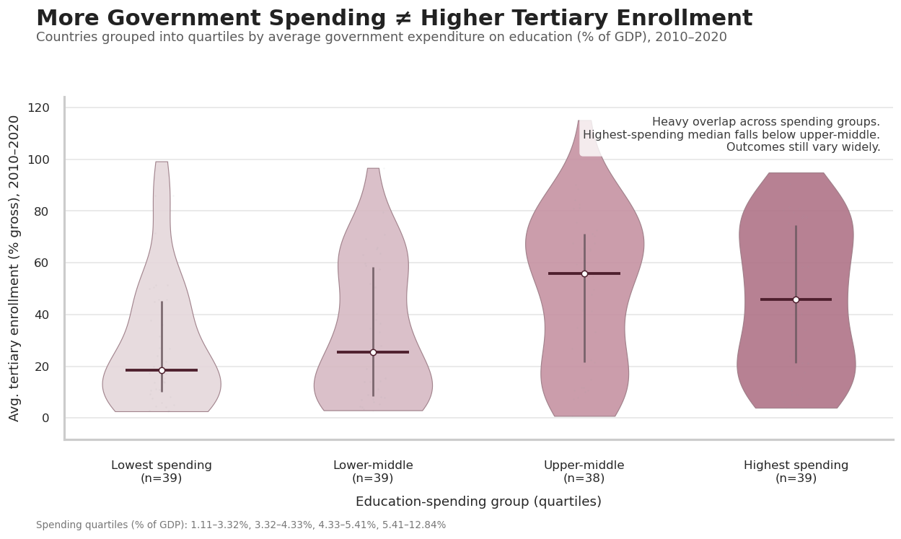

Dataset: World Bank Human Development Indicators (1960–2020)

Design Decisions & Rationale

Design Decisions & Rationale
Overall Design Process
The easiest part of this project was coming up with a general idea. It already makes sense that investing in education and national prosperity would be connected in some way, so at first the proposition felt pretty obvious. The harder part was figuring out what we actually wanted to compare. Education spending, enrollment, and GDP per capita all sound related, but they do not tell the exact same story. We were surprised by how much the chart changed depending on which variable we chose, how we grouped the countries, and what we decided to point out with labels.
Making both sides also made the assignment more interesting than just trying to make one "correct" graph. For the supporting visualization, it was fairly easy to make the relationship look strong by using enrollment groups and showing the big difference between the lowest and highest groups. For the opposing visualization, we had to think more carefully about how to argue against the proposition without just making something false. The violin plot helped because it showed that more government education spending does not automatically lead to higher enrollment rates. That made us realize that ethical visualization is not only about using real data, but also about being honest about what the chart is emphasizing and what it is leaving in the background.
We do not think there is a perfect line between persuasion and deception, but there are some warning signs. It feels acceptable to choose a title, colors, or grouping that helps the reader understand the point of the chart, as long as the chart still gives them enough information to question it. It becomes more misleading when the design depends on hiding context, cherry-picking one exception, or making a weak pattern look much stronger than it is. In our charts, both sides use some persuasive choices, but the more questionable choices are the ones that push the reader toward one conclusion while making the messier parts of the data easier to miss.